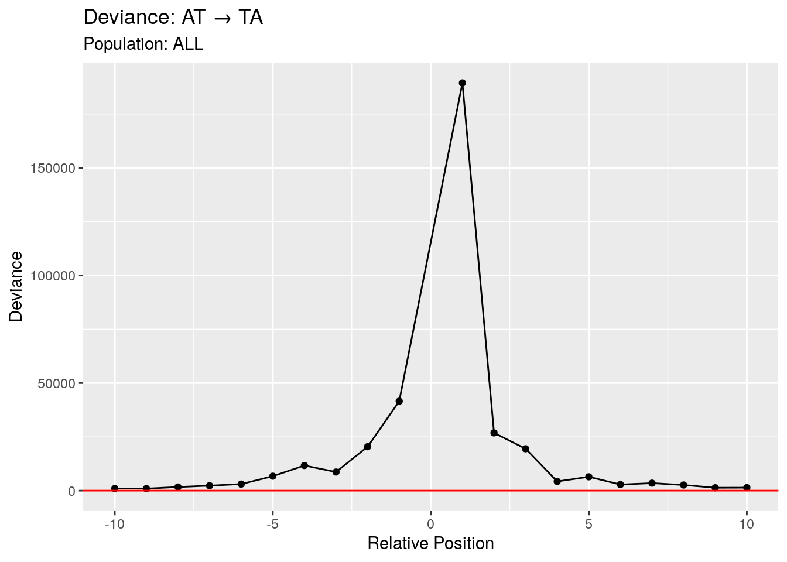

Last updated: 2022-10-13
Checks: 6 1
Knit directory: LSCI/
This reproducible R Markdown analysis was created with workflowr (version 1.7.0). The Checks tab describes the reproducibility checks that were applied when the results were created. The Past versions tab lists the development history.
The R Markdown file has unstaged changes. To know which version of
the R Markdown file created these results, you’ll want to first commit
it to the Git repo. If you’re still working on the analysis, you can
ignore this warning. When you’re finished, you can run
wflow_publish to commit the R Markdown file and build the
HTML.
Great job! The global environment was empty. Objects defined in the global environment can affect the analysis in your R Markdown file in unknown ways. For reproduciblity it’s best to always run the code in an empty environment.
The command set.seed(20211101) was run prior to running
the code in the R Markdown file. Setting a seed ensures that any results
that rely on randomness, e.g. subsampling or permutations, are
reproducible.
Great job! Recording the operating system, R version, and package versions is critical for reproducibility.
Nice! There were no cached chunks for this analysis, so you can be confident that you successfully produced the results during this run.
Great job! Using relative paths to the files within your workflowr project makes it easier to run your code on other machines.
Great! You are using Git for version control. Tracking code development and connecting the code version to the results is critical for reproducibility.
The results in this page were generated with repository version aae0566. See the Past versions tab to see a history of the changes made to the R Markdown and HTML files.
Note that you need to be careful to ensure that all relevant files for
the analysis have been committed to Git prior to generating the results
(you can use wflow_publish or
wflow_git_commit). workflowr only checks the R Markdown
file, but you know if there are other scripts or data files that it
depends on. Below is the status of the Git repository when the results
were generated:
Ignored files:
Ignored: .Rhistory
Ignored: .Rproj.user/
Ignored: analysis/disqus.html
Ignored: code/random/
Unstaged changes:
Modified: analysis/null_dist.Rmd
Note that any generated files, e.g. HTML, png, CSS, etc., are not included in this status report because it is ok for generated content to have uncommitted changes.
These are the previous versions of the repository in which changes were
made to the R Markdown (analysis/null_dist.Rmd) and HTML
(docs/null_dist.html) files. If you’ve configured a remote
Git repository (see ?wflow_git_remote), click on the
hyperlinks in the table below to view the files as they were in that
past version.
| File | Version | Author | Date | Message |
|---|---|---|---|---|
| Rmd | f2caf10 | Andy Beck | 2022-10-04 | allGC |
Here we will be looking at the deviance statistics computed when comparing singleton and control observations
library(tidyverse)── Attaching packages ─────────────────────────────────────── tidyverse 1.3.2 ──
✔ ggplot2 3.3.6 ✔ purrr 0.3.4
✔ tibble 3.1.8 ✔ dplyr 1.0.9
✔ tidyr 1.2.0 ✔ stringr 1.4.0
✔ readr 2.1.2 ✔ forcats 0.5.1
── Conflicts ────────────────────────────────────────── tidyverse_conflicts() ──
✖ dplyr::filter() masks stats::filter()
✖ dplyr::lag() masks stats::lag()source("code/single_pos_functions.R")
#input_dir <- "/net/snowwhite/home/beckandy/research/1000G_LSCI/output/null_dist/ALL/"
input_dir <- "/net/snowwhite/home/beckandy/research/1000G_LSCI/output/null_dist/no_mask/ALL/"Let’s get the table for a single subtype. For this we will need to aggregate across the 22 autosomes:
read_csv(paste0(input_dir, "singleton_9_AT_GC.csv"), show_col_types = FALSE) %>%
mutate(Nuc = toupper(Nuc)) %>%
group_by(Nuc) %>%
summarise(Singletons = sum(Singletons))# A tibble: 5 × 2
Nuc Singletons
<chr> <dbl>
1 A 177297
2 C 120388
3 G 120281
4 N 37
5 T 177563load_subtype_singleton_chromosome <- function(subtype, input_dir, chrom){
f_name <- paste0(input_dir, "singleton_",chrom,"_",subtype,".csv")
df <- read_csv(f_name, show_col_types = FALSE) %>%
mutate(Nuc = toupper(Nuc)) %>%
group_by(Nuc) %>%
summarise(Singletons = sum(Singletons)) %>%
filter(Nuc %in% c("A", "T", "C", "G"))
return(df)
}
load_subtype_control_chromosome <- function(subtype, input_dir, chrom){
f_name <- paste0(input_dir, "control_",chrom,"_",subtype,".csv")
df <- read_csv(f_name, show_col_types = FALSE) %>%
mutate(Nuc = toupper(Nuc)) %>%
group_by(Nuc) %>%
summarise(Controls = sum(Controls)) %>%
filter(Nuc %in% c("A", "T", "C", "G"))
return(df)
}
load_subtype_singletons <- function(subtype, input_dir){
df <- load_subtype_singleton_chromosome(subtype, input_dir, 1)
for(i in 2:22){
df2 <- load_subtype_singleton_chromosome(subtype, input_dir, i)
df <- full_join(df, df2, by = "Nuc") %>%
mutate(Singletons = Singletons.x + Singletons.y) %>%
select(Nuc, Singletons)
}
return(df)
}
load_subtype_controls <- function(subtype, input_dir){
df <- load_subtype_control_chromosome(subtype, input_dir, 1)
for(i in 2:22){
df2 <- load_subtype_control_chromosome(subtype, input_dir, i)
df <- full_join(df, df2, by = "Nuc") %>%
mutate(Controls = Controls.x + Controls.y) %>%
select(Nuc, Controls)
}
return(df)
}
load_table <- function(subtype, input_dir){
df_s <- load_subtype_singletons(subtype, input_dir)
df_c <- load_subtype_controls(subtype, input_dir)
df <- full_join(df_s, df_c, by = "Nuc") %>%
arrange(Nuc)
return(df)
}
re_stat <- function(subtype, input_dir){
df <- load_table(subtype, input_dir) %>%
pivot_longer(-Nuc, names_to = "type", values_to = "n")
mod_obj <- glm(n ~ Nuc + type, data = df, family = poisson())
df$re <- 2 * df$n * log(df$n / mod_obj$fitted.values) / (2 * sum(df$n))
return(sum(df$re))
}
deviance_stat <- function(subtype, input_dir){
df <- load_table(subtype, input_dir) %>%
pivot_longer(-Nuc, names_to = "type", values_to = "n")
mod_obj <- glm(n ~ Nuc + type, data = df, family = poisson())
final <- list(deviance = deviance(mod_obj), re = deviance(mod_obj) / (2*sum(df$n)))
return(final)
}Let’s look at our subtypes:
plot_pos_stat("ALL", "AT_TA", dev_by_position, title_text = "Deviance: ", ylab_text = "Deviance") +
geom_hline(yintercept = 4.12, colour = "red")
dev_by_position("ALL", "AT_TA") pos statistic
1 -10 973.7553
2 -9 947.6336
3 -8 1686.3361
4 -7 2316.9020
5 -6 3050.1375
6 -5 6729.1572
7 -4 11683.1682
8 -3 8659.0871
9 -2 20425.0615
10 -1 41555.5515
11 1 189449.1974
12 2 26839.4011
13 3 19476.1566
14 4 4284.5914
15 5 6440.6500
16 6 2831.6551
17 7 3490.7337
18 8 2621.1852
19 9 1337.2972
20 10 1387.5003zhu_by_pos("ALL", "AT_TA") pos statistic
1 -10 2.241237e-05
2 -9 2.181115e-05
3 -8 3.881344e-05
4 -7 5.332683e-05
5 -6 7.020329e-05
6 -5 1.548812e-04
7 -4 2.689049e-04
8 -3 1.993013e-04
9 -2 4.701121e-04
10 -1 9.564608e-04
11 1 4.360445e-03
12 2 6.177473e-04
13 3 4.482717e-04
14 4 9.861602e-05
15 5 1.482408e-04
16 6 6.517461e-05
17 7 8.034425e-05
18 8 6.033034e-05
19 9 3.077982e-05
20 10 3.193531e-05And if we look at the value of the statistic when considering relative position +1000:
deviance_stat("AT_TA", input_dir)$deviance
[1] 4.120775
$re
[1] 9.484975e-08Let’s go ahead and grab the +1000 statistic for each subtype:
get_all_long_stat <- function(input_dir){
subtypes <- c("AT_CG", "AT_GC", "AT_TA",
"GC_AT", "GC_TA", "GC_CG",
"cpg_GC_AT", "cpg_GC_TA", "cpg_GC_CG")
dev <- c()
re <- c()
for(st in subtypes){
val <- deviance_stat(st, input_dir)
dev <- c(dev, val$deviance)
re <- c(re, val$re)
}
return(data.frame(st = subtypes, dev = dev, re = re))
}
get_all_long_stat(input_dir) %>% knitr::kable()| st | dev | re |
|---|---|---|
| AT_CG | 2.263100 | 0.0e+00 |
| AT_GC | 1.730649 | 0.0e+00 |
| AT_TA | 4.120775 | 1.0e-07 |
| GC_AT | 5.585595 | 0.0e+00 |
| GC_TA | 3.696604 | 1.0e-07 |
| GC_CG | 2.207203 | 0.0e+00 |
| cpg_GC_AT | 14.966783 | 2.0e-07 |
| cpg_GC_TA | 6.562422 | 1.1e-06 |
| cpg_GC_CG | 3.338975 | 7.0e-07 |
sessionInfo()R version 4.2.1 (2022-06-23)
Platform: x86_64-pc-linux-gnu (64-bit)
Running under: Ubuntu 18.04.6 LTS
Matrix products: default
BLAS: /usr/lib/x86_64-linux-gnu/openblas/libblas.so.3
LAPACK: /usr/lib/x86_64-linux-gnu/libopenblasp-r0.2.20.so
locale:
[1] LC_CTYPE=en_US.UTF-8 LC_NUMERIC=C
[3] LC_TIME=en_US.UTF-8 LC_COLLATE=en_US.UTF-8
[5] LC_MONETARY=en_US.UTF-8 LC_MESSAGES=en_US.UTF-8
[7] LC_PAPER=en_US.UTF-8 LC_NAME=C
[9] LC_ADDRESS=C LC_TELEPHONE=C
[11] LC_MEASUREMENT=en_US.UTF-8 LC_IDENTIFICATION=C
attached base packages:
[1] stats graphics grDevices utils datasets methods base
other attached packages:
[1] forcats_0.5.1 stringr_1.4.0 dplyr_1.0.9 purrr_0.3.4
[5] readr_2.1.2 tidyr_1.2.0 tibble_3.1.8 ggplot2_3.3.6
[9] tidyverse_1.3.2 workflowr_1.7.0
loaded via a namespace (and not attached):
[1] httr_1.4.3 sass_0.4.1 bit64_4.0.5
[4] vroom_1.5.7 jsonlite_1.8.0 modelr_0.1.8
[7] bslib_0.3.1 assertthat_0.2.1 getPass_0.2-2
[10] highr_0.9 googlesheets4_1.0.0 cellranger_1.1.0
[13] yaml_2.3.5 pillar_1.7.0 backports_1.4.1
[16] glue_1.6.2 digest_0.6.29 promises_1.2.0.1
[19] rvest_1.0.2 colorspace_2.0-3 htmltools_0.5.2
[22] httpuv_1.6.5 pkgconfig_2.0.3 broom_1.0.0
[25] haven_2.5.0 scales_1.2.0 processx_3.5.3
[28] whisker_0.4 later_1.3.0 tzdb_0.3.0
[31] git2r_0.30.1 googledrive_2.0.0 generics_0.1.3
[34] farver_2.1.0 ellipsis_0.3.2 withr_2.5.0
[37] cli_3.3.0 magrittr_2.0.3 crayon_1.5.1
[40] readxl_1.4.0 evaluate_0.15 ps_1.7.0
[43] fs_1.5.2 fansi_1.0.3 xml2_1.3.3
[46] tools_4.2.1 hms_1.1.1 gargle_1.2.0
[49] lifecycle_1.0.1 munsell_0.5.0 reprex_2.0.1
[52] callr_3.7.0 compiler_4.2.1 jquerylib_0.1.4
[55] rlang_1.0.4 grid_4.2.1 rstudioapi_0.13
[58] labeling_0.4.2 rmarkdown_2.14 gtable_0.3.0
[61] DBI_1.1.2 R6_2.5.1 lubridate_1.8.0
[64] knitr_1.40 fastmap_1.1.0 bit_4.0.4
[67] utf8_1.2.2 rprojroot_2.0.3 stringi_1.7.6
[70] parallel_4.2.1 Rcpp_1.0.8.3 vctrs_0.4.1
[73] dbplyr_2.1.1 tidyselect_1.1.2 xfun_0.31